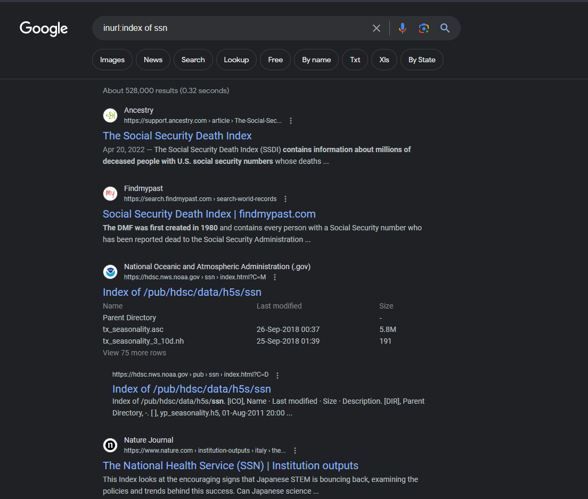

Using google to pwn websites

Using google to pwn websites
By: Nopwn
What is google Dorking?
Google Dorking is a method used by attackers that utilizes Google's special search terms and queries. For example: if you search "Barak Obama," you will be bombarded with articles about him during his presidency. However, let's say you are researching Obama as a senator rather than as a president. In that case, you can use the query "Barack Obama before:2006" to find information about him as a senator.How do hackers use it?
Google Dorking turns malicious when attackers exploit it to gather sensitive information. In this write-up, I will demonstrate various ways attackers utilize Google Dorking to discover private documents, access open directories, uncover passwords, and obtain other confidential data.Open Directories
A simple but effective query for google Dorking is:inurl:index of x
When you gain access to an open directory, it provides you with a lot of information. As an attacker, this information can be used to create exploits, gather user data, and so on.
The way to fix open directories is actually quite simple, and it's rather baffling that not every website does it. I will demonstrate the fix using Apache2, but the other fixes are equally straightforward. Just navigate to your Apache2 .htaccess file and add the following code:
Options -IndexesFiletypes
Searching by filetype is a powerful Google Dork. The term "filetype" refers to the extension at the end of a file, like .pdf, .doc, .xls, and so on. This technique has multiple applications, such as easily finding books. However, it is important to emphasize that accessing copyrighted material without proper authorization is both illegal and unethical.Book Name filetype:pdfAs you can see, the very first result was the book we were looking for because we specified the filetype.
Apart from pirates, attackers can also exploit this technique to gather sensitive information, including source code, spreadsheets, user data, and more.
Varegg's bad backup storing practices
Here I am going to demonstrate finding source code using a Google search. We are simply going to use this search term:"admin" filetype:bakAnd when we visit the directory, it prompts us to download a file named password.php.0001.16f5.bak. This piques my interest because a PHP file on a website is typically not readable by users. It is considered secure backend code. However, when it's saved with extensions such as .bak or .save or anything after .php, it becomes readable to users. This poses a significant risk as PHP files often contain sensitive information such as credentials, SQL details, and more.
Upon examining the code, we unfortunately do not retrieve SQL credentials as they are accessed through an included PHP file that remains hidden from us. However, what we can observe are the SQL statements used to execute queries for this site. This raises a few concerns. Firstly, it allows us to view the database structure, which is advantageous for hackers targeting SQL injection vulnerabilities. Secondly, it highlights poor coding practices, as the code directly inserts POST parameters into the query instead of using prepared statements, thereby leaving room for SQL injection attacks.
mysql_query("UPDATE tplls_passwords SET PasswordPassword = '$new' WHERE PasswordID = '2'",$connection)mysql_query("UPDATE tplls_passwords SET PasswordPassword = 'f'; DROP TABLE tplls_passwords; -- WHERE PasswordID = '2'", $connection); Credential Harvesting
We can also use the "filetype" google Dork to harvest credentials. We will simply go over some examples rather than going overly in-depth.intitle:untitled filetype:xls intext:passwordfiletype:env "DB_PASSWORD"Conclusion
This was only a short introduction to google Dorking, and can be used for much more than what we have done here. There are several important notes we can take from this: the first is that this can be a great tool for Bug Bounty Hunting. However, it is important to ensure you stay within scope; finding certain information can be illegal. The second is that you should not store anything sensitive on a web server unless you intend to share it. . The third thing to note is to close your damn directories, so many major companies fail to do this, and it consistently leads to being pwned.
SECURITY - INTELLIGENCE - DEVELOPMENT
Penetration Testing | Reverse Engineering | Exploit Development | Malware Development
Join Us